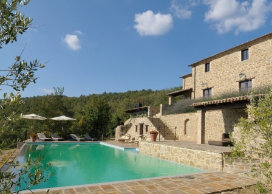
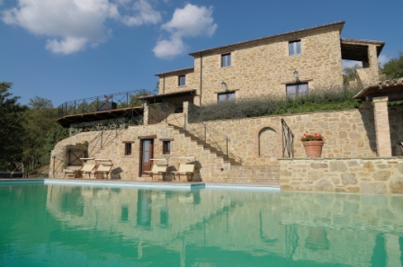
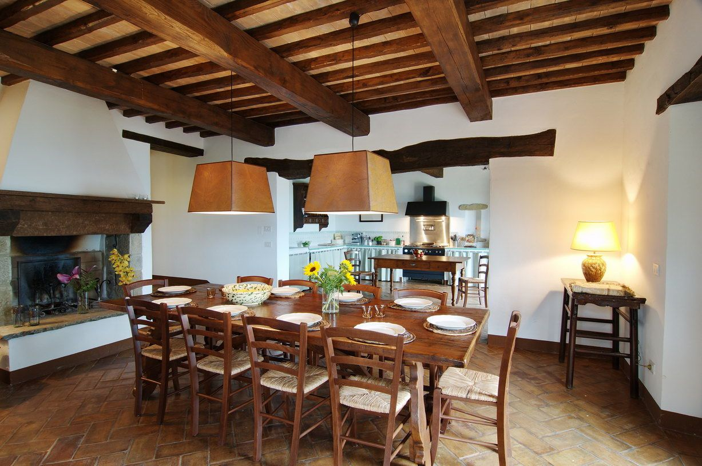
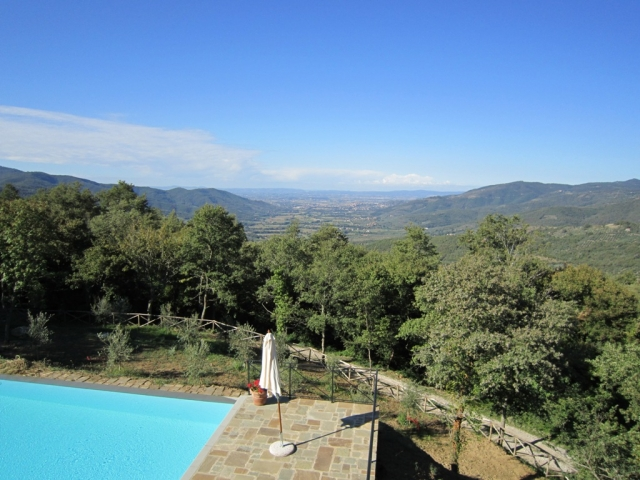
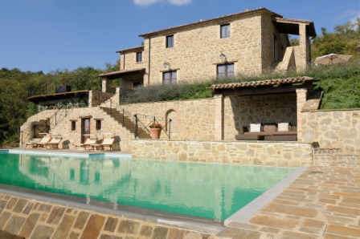
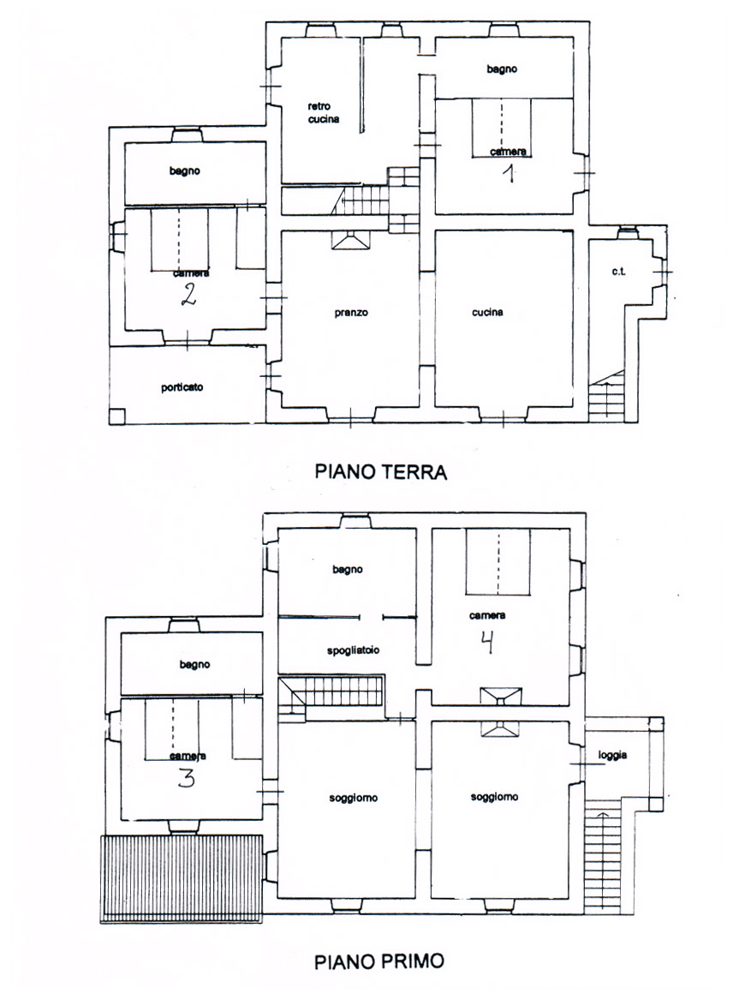

Casa Marcanda
Looking for the perfect place to combine relaxation, tranquility and family fun at the pool, with stunning views and all that Tuscany offers
Welcome to Casa Marcanda in Polvano
A beautiful and totally restored country house, originally from the 16th century.
Casa Marcanda is located at the hillside above the small town of Polvano in an exceptional environment, with a lush, varied landscape and woodlands. The villa is overlooking the marvelous Chio Valley (Valle di Chio) and surrounding hills and the medieval town of Castiglion Fiorentino, very well known in the past for being a fundamental crossroad between Arezzo and Cortona.

Casa Marcanda
The villa was only restored a few years ago with much attention to details and in respect of Italian traditions, preserving as much as possible of the original features. When you reach this property on top of the hill you discover a stunning view and will have the impression of touching the sky.
Especially from the pool and terrace you can admire the exceptional beauty of the Tuscan countryside. It is the ideal location to relax, spend some time immersed in unspoiled nature, take nice walks on trekking paths, but also explore the region.
In fact many interesting locations like Arezzo, Cortona, Montepulciano, Pienza and Montalcino can be reached in a short drive. Umbria is also very close: in 20 minutes you reach Lake Trasimeno with its lovely fishing villages.
Gallery
Tap a photo to see it larger.
Interior
The villa includes four large bedrooms with twin beds, one extra single bed in two rooms and a portable baby bed. There are four bathrooms, one with a double shower and three with shower and bath. Three rooms have en-suite bathrooms and one bedroom has an open fireplace.
The large, open dining room has a table for 12 persons and an open fireplace and opens out to the ground floor terraces with valley view. The dining room is en suite with a very large and fully equipped built-in kitchen with a full range of modern appliances and utility cupboard.
On the first floor there are two large living rooms, one with a satellite television set, DVD player and a corner sofa/futon and the other with comfortable sofas and armchairs and an open fireplace. All rooms have floor heating.

Features
- Dishwasher
- American fridge
- Ilve stove with a double oven
- Scullery with laundry facilities, washing machine, dryer and an extra fridge
- 3 fireplaces
- Wireless internet access
- Bose music player for iPod etc.
- Floor heating in all rooms

Exterior
Several terraces covered with tiles/wood surround the villa, all with a scenic and picturesque view over the valley and the traditional Tuscan countryside.
Among these a beautiful and large terrace with BBQ and a dining table for 10 persons under the pergola, a roofed terrace with comfortable lounge chairs and a large (80 m²) wooden terrace with sun beds and umbrellas.

A large private swimming pool (6 × 15 meters) with infinity appearance, surrounded by a sun terrace with beautiful tiles. The pool area includes 8 sun beds, umbrellas, a roofed lounge corner with comfortable sofas, a relaxing and mostly shaded place with a large hammock, a toilet and changing room and an outdoor shower.
The garden area is fenced and includes olive trees, roses, lavender and rosemary and two big cypresses at the main entrance.
Parking for 5 cars.
How to get here
Casa Marcanda and the small town of Polvano are situated a few kilometers from the city of Castiglion Fiorentino, which can be reached from the main road that links Cortona to Arezzo, in the direction of the Chio Valley.
By car
Take the A1 motorway that connects Rome and Milan. Leave the motorway at the Monte San Savino exit (approximately 80 km south of Florence) and follow the signs for Castiglion Fiorentino. Once you get to Castiglion Fiorentino continue on SR71 in the direction of Cortona-Perugia. Once you have passed two roundabouts you get to a traffic light, then turn left following signs for Polvano. Follow the road that runs through the Chio Valley, and after about 7 kilometers turn left at the blue Polvano urban road sign (there is a small house just at the roadside). Follow the black road, which leads you through the small town of Polvano and hereafter the gravel/partly concrete road. Keep right and turn right at the tin shed after 150 meters. Follow the road 1.5 kilometers and keep left when the road splits. Continue this way and after 0.5 kilometers you will reach the villa. Hereafter the road becomes a rocky road going up to the hilltop. Please note that the road is occasionally steep and with curves, which is no problem for standard cars, but not for sports or low cars.
Map and satellite coordinates
Longitude: 12°01'15.5"E
Latitude: 43°21'51.8"N
Airports
- Perugia 65 km
- Florence 120 km
- Pisa 180 km
- Rome 185 km
- Bologna 210 km
Sport and relaxation
Tennis courts and golf courses, sports facilities and horse riding centres can be found in the area near Polvano and Castiglion Fiorentino.
Lake Trasimeno, approximately 20 km away, is a popular destination for those who love cycling.
For those who prefer mountain biking or trekking on foot, well-marked map trails start from Polvano and cross the Chio Valley, climbing up the surrounding mountains.
Floor plan

Location
Casa Marcanda is situated in Polvano, a beautiful and totally restored country house, originally from the 16th century, located at the hillside above the small town of Polvano in an exceptional environment, with a lush, varied landscape and woodlands. The villa is overlooking the marvelous Chio Valley (Valle di Chio) and surrounding hills and the medieval town of Castiglion Fiorentino, very well known in the past for being a fundamental crossroad between Arezzo and Cortona.
A map can be added here (for example an OpenStreetMap embed, which does not track visitors).
Prices
Prices are for rental of one week. Two weeks: 10% discount. A month or more: 20% discount.
| High season | |
|---|---|
| Week 25–35 | € 5,300 |
| Mid season | |
| Week 18–24 | € 4,550 |
| Week 36–39 | € 4,550 |
| Low season | |
| Week 1–17 | € 3,900 |
| Week 40–1 | € 3,900 |
Included
Water, electricity, gas for cooking, heating, linen and towels, final cleaning.
Not included
Extra services on request.
Security deposit
€ 1,000
Calendar
The availability calendar from the current site is moved here. Booked weeks are shown plainly, and no timers or "only 1 week left" messages are used.
[Calendar to be connected: the current site's availability page is dynamic and was not part of the copied content.]
How we run this site
Clear prices
The weekly price, deposit and what is included are shown above, before you contact us. There are no booking fees added later on this site.
No tracking
The site sets no advertising cookies and uses no tracking scripts, so there is no cookie banner to click away.
Your details stay with us
What you write in the contact form is used only to answer your enquiry and is never passed on.
Contact us
Select the dates that are relevant for your enquiry, if you have them in mind.